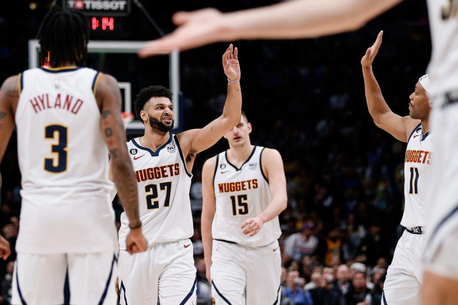
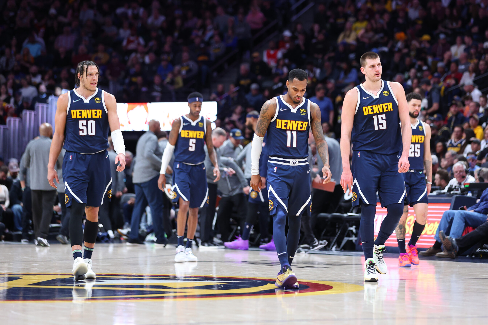
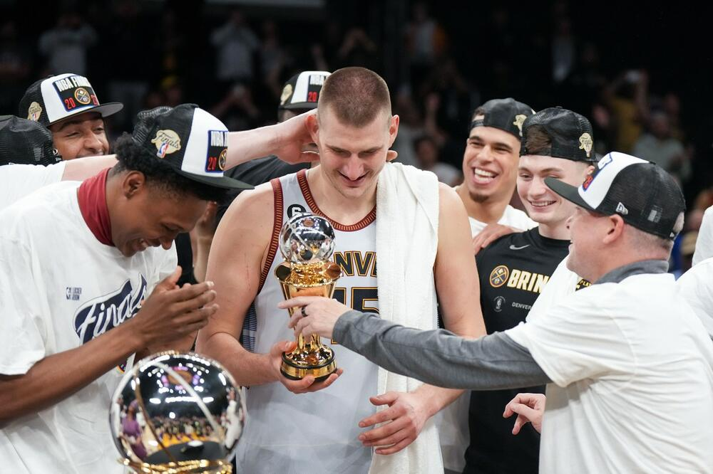

Врло вероватно је велика већина како домаће тако и стране јавности упућена, али за оне који нису, српски ас Никола Јокић се нашао у великом финалу овосезонске НБА лиге. У ову сезону је екипа из Колорада ушла са највећим амбиција као и са можда најконкурентнијим саставом у историји ове франшизе. Свакако, овај састав Денвера се градио годинама и годинама, било више падова него успеха, промашених појачања или ти такозваних "трејдова", суспензија, повреда, несрећно изгубљених уткамица и серија плеј-офа, али ове сезоне је изгледа све дошло на своје.
Нагетси су у ову сезону ушли веома спремно и што је најбитније без икаквих повреда и суспензија. Од почетка су бележили одличне резултате, било је доста лаганих и убедљивих победа, а како је сезона одмицала било је и све мање пораза. Наравно, као главни предводник екипе се поставио наш Никола Јокић као и његов дугогодишњи саиграч Џамал Мареј, али су се ту наравно укључивали и остали играчи: Кендл-Поуп, Портер Џуниор, Ерон Гордон, Брус Браун...
Екипа из Колорада је на крају регуларног дела сезоне завршила на првој позицији на западној конференцији са скором 53:29 и тако са значајном предошћу ушла у плеј-оф.
У првој рунди их је дочекала екипа Минесота Тимбрлвулса као осмопласирана, коју су предводили млади Ентони Едвардс и већ искусни Карл Ентони Таунс. Пред почетак саме серије Денвер је био изразити фаворит и очекивало се да ће лако привести посао крају, што се на крају и обестинило јер је екипе Минесоте успела да "украде" само једну победу те су Никола и момци славили са укупним резултатом 4:1 и тако се пласирали у полуфинале западне конференције, а истакли су се као и током регуларног дела сезоне Никола јокић и Џамал Мареј а остатак екипе је то сјајно испратио са својим ролама.
У полуфиналу их је дочекала тек састављена екипа Финикс Санса предвођена једним од најбољих играча свих времена - Кевином Дурентом а наравно ту је био и Девин Букер - доскорашње прво лице франшизе, као и преискусни омалени плејмејкер Крис Пол. Ипак, тимска кошарка се опет истакла као доминантнија у односу на индивидуалну те су Денвер Нагетси прошли у финале конференције са укупним резултатом 4:2, упркос томе што је у једном моменту резултат серије био 2:2, али је ипак екипа из Колорада успела да преброди малу кризу и избаци Финикс из плеј-офа.
Као сјајна прилика за реванш, у финалу западне конференције је дошла једна од две највећа франшизе у историји НБА лије - Лос Анђелес Лејкерси. Као реприза финала из корона 2020. сезоне које се одиграло у балону у Орланду, ово је била сјајна прилика да се екипа Денвера освети играчима из града анђела. Ипак од почетка се знало да то неће бити лако јер екипу из Лос Анђелеса предводи један од најбољих кошаркаша икада али и већ у позним играчким годинама- ЛеБрон Џејмс. Али наравно популарни "краљ" није био сам јер је тик уз њега ту и Ентони Дејвис као и остали играчи задатка попут Дениса Шрудера, Остина Ривса итд. И наравно да ово финало није било случајно, са једне стране је била феноменална тимска и доминантна кошарка екипе Денвер Нагетса, а са друге искусни тим Лејкерса који су до финала "прешли" преко Мемфис Гризлиса и доскорашњих шампиона Голден Стејт Вориорса. Али ипак на изненађење многих екипа Денвера је "почистила" ЛеБрона и дружину са 4:0 и тако се по први пут у историји своје франшизе пласирала у велико финале НБА лиге, а Никола Јокић је био именован за МВП-ја западне конференције са плеј-оф сезону 2022./23.
Почетак великог финала је заказан за 1. Јун, а екипа Денвера и даље чека свог противника, односно бољег из дуела Бостон Селтикса и Мајами Хита, а победник ће бити одређен након 7. утакмице у Бостону. Оно што је на нама јесте да бодримо нашег МВП-ја и да верујемо да може да се деси немогуће.
  Назад на врх